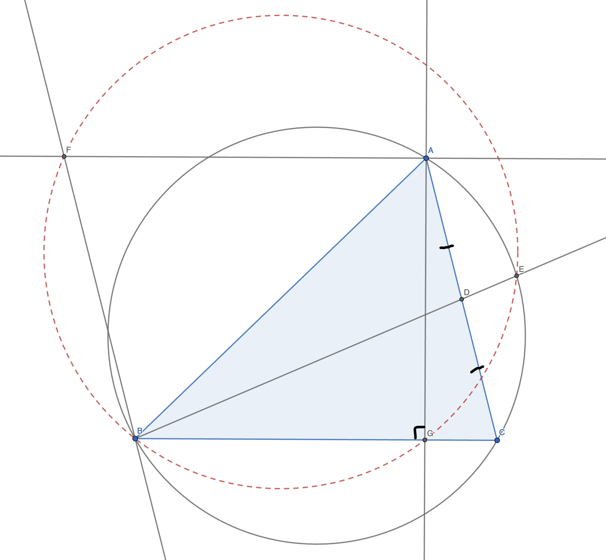

Another funny one, (prove that the blue and green circles are tangent)
üóìÔ∏è May 24, 2025
Here is another one I came up with,
üóìÔ∏è May 7, 2025
A very simple and cute problem I came up with, (my very first problem!)
üóìÔ∏è April 19, 2025
I'm thrilled to announce that I'll be representing Norway at the IMO 2025!
üóìÔ∏è April 11, 2025
Nice moving points problem from the IMO, (prove that if E is an arbitrary point on the arc \(BDC\) then the intersection of \(EI\) and \(DG\) lies on \((ABC)\))
üóìÔ∏è March 22, 2025
Wishing the very best of luck tomorrow!
Anyways, I learned a lot during the training camp and picked up a cool technique involving asymptotic density to solve the following problem.
Do there exist infinitely many numbers that cannot be expressed by the sum \(a^3 + b^5 + c^7 + d^9 + e^{11}\), where \(a, b, c, d, e\) are nonnegative integers?
üóìÔ∏è March 17, 2025
Some weekend inequalities,
1. Given \(a, b, c \in \mathbb{R}^{+}\) such that \(abc = 1\), prove that,
$$\frac{a}{a + b + 1} + \frac{b}{b + c + 1} + \frac{c}{c + a + 1} \geq 1$$
2. Given \(x, y, z \in \mathbb{R}^{+}\) such that \(x + y + z = 1\), prove that,
$$\frac{x}{\sqrt{(1 - x)(1 - y)}} + \frac{y}{\sqrt{(1 - y)(1 - z)}} + \frac{z}{\sqrt{(1 - z)(1 - x)}} \geq \frac{3}{2}$$
üóìÔ∏è March 8, 2025
Very cool, though simple,
üóìÔ∏è February 24, 2025
A lot of theorems in one configuration about a triangle with \(\angle{A} = 60°\). (Note that \(I'\) is the reflection of \(I\) through \(BC\))
üóìÔ∏è February 23, 2025
Nice little problem,
Prove that there exists a permutation of the natural number such that the sum of the first \(k\) numbers is divisble by \(k\) for all natural \(k\).
üóìÔ∏è February 20, 2025
Never saw this before,

üóìÔ∏è February 10, 2025
On the circumference of a circle there are red and blue points. One may add a red point and change the colour of both its neighbours (to the other colour) or remove a red point and change the colour of both its previous neighbours. Initially there are two red points. Prove that there is no sequence of allowed operations which leads to the configuration consisting of two blue points.
There are two beautiful in their own way solutions, here I will present both of those solutions, one will have group-theoretic origins whilst the other will stem from pure combinatorial conclusions.
Combinatorial Approach: Suppose \(B_1, \ldots B_n\) are the blue points on the circle, and let \(a_1, a_2, \ldots a_n\) represent the number of red points between \(B_i\) and \(B_{i + 1}\). Then, let us call the following quantity the characteristic of the state,
$$C = a_1 - a_2 + \ldots - a_n$$
Then it is not difficult to check that this value remains invariant under the operations, however is different at the start and at the end, contradiction!
Group-theoretic Approach: Let us consider the Dihedral group of a \(3\)-gon (a order \(6\) group), let \(r\) and \(s\) be its generators, the group will consist of \(6\) elements, \(\{1, r, r^2, s, sr, sr^2\}\). Let us notice that the following identities hold,
$$rrr = ss \impliedby r^3 = 1 = s^2$$
$$rrs = sr \impliedby r^2s^2 = srs = r^{-1}$$
$$srr = rs \impliedby s^2r^2 =srs =r^{-1}$$
$$srs = rr \impliedby r^2 = r^{-1}$$
Let us assume \(r\) is red and \(s\) is blue, as you can see from these four examples, the exact operations described in the problem statement are actually simply identities in $D_6$. Thus, a simple idea, which naturally follows out of this is to consider the product of all the values around the circle (meaning, a product of some $r$-s and $s$-s), then due to the operation keeping this product the same, we have identified an extremely useful invariant. All that is left to notice is that $r^2 = r_{-1} \neq 1$, however $s^2 = 1$, thus it is impossible to get from one state to the other simply through applying the operations outlined in the problem statement.
Tournament of Towns 001, 1980 Spring J1 S1
üóìÔ∏è January 20, 2025
Good luck!
üóìÔ∏è January 15, 2025
Thought of sharing, I have outlined here the proof that the pressure law for gases takes the form of \(P = \frac{1}{n} \rho V_{av}^2\) for an \(n\)-dimentional hyperspheres, not sure this qualifies for a post on the main site, that is why I am publishing it here.
üóìÔ∏è January 14, 2025
Some fun, not that elegant though, problems that I solved today...
1. Consider three natural numbers, \(a, b, c\), such that the ratio \(\frac{ab + c^2}{a + b}\) is an integer less than \(a\) and \(b\). What is the minimal number of divisors that \(a + b\) can have?
2. Consider two distinct primes \(p\) and \(q\), let \(n\) be a pretty number if \(p + q\) can be represented as a sum of \(q\) numbers of the form \(n^k\) where \(k\) is some non-negative integer (as an example if \(p = 7\) and \(q = 3\), then \(2\) is pretty, because \(7 + 3 = 2^3 + 2^0 + 2^0\)). Prove, that for given \(p\) and \(q\) there can be no more than \(2\) pretty numbers.
üóìÔ∏è January 3, 2025
Happy New Year! üéâ Here's to a great 2025, a year full of fascinating mathematical facts:
1. \(2025 = 45^2 = (1 + 2 + \ldots + 9)^2\)
2. \(2025 = 1^3 + 2^3 + \ldots + 9^3\)
3. \(2025\) is the sum of all numbers in a \(9 \times 9\) multiplication table.
4. \(2025\) is a Harshad number, divisible by the sum of its digits (9).
5. You can write \(2025\) using just \(1, 2, 3, 4, 5\): \(2025 = 1 \cdot 3^4 \cdot 5^2\).
6. Adding 1 to each digit of \(2025\) gives \(3136\) (a square). Changing one digit gives another square: \(3025\).
7. There are \(2025\) numbers from \(1\) to \(9999\) where the last digit is greater than all previous digits.
8. Fun fact: \(27^2 + 36^2 = 2025\).
9. \(2025\) is the sum of two triangular numbers (\(\frac{44 \cdot 45}{2}\) and \(\frac{45 \cdot 46}{2}\)). Also, splitting \(2025\) into \(20\) and \(25\) gives \(45\), which is triangular and the square root of \(2025\).
10. \(2025 = (20 + 25) \cdot (20 + 25)\).
Wishing everyone the best in 2025! üåü
üóìÔ∏è January 1, 2025
Very simple and elegant problem surrounding the concept of homothepy,
There are three circles of the same radius inscribed into the angles of a triangle which all intersect in one point \(X\), prove that \(X\) lies on the line \(OI\) (where \(O\) is the circumcenter and \(I\) is the incenter).
üóìÔ∏è December 29, 2024
Came across a simple problem which yeilds a beautiful result.
A robot is randomly walks \(K\) steps in a square grid, what is the expected distance from the origin?
We can first solve the one dimentional case, let \(\gamma\) be a random variable representing the distance from the robot at the end til the origin, then,
$$\mathbb{E} \gamma = \mathbb{E} | \sum_{i = 1}^K a_i |$$
where \(a_i\) is the random variable representing the \(i\)-th step. However, working with the module is difficult thus, we can take a simpler approach by calculating the following value,
$$\mathbb{E} \gamma^2 = \mathbb{E} \left[ \sum_{i = 1}^K (\text{one step}) \right] ^ 2 = \mathbb{E} \left[ \sum_{i = 1}^K a_i^2 + \sum_{i \neq j} a_i a_j \right] = \mathbb{E} \left[ \sum_{i = 1}^K a_i^2 \right] + \mathbb{E} \left[ \sum_{i \neq j} a_i a_j \right]$$
Notice, that,
$$\mathbb{E} \left[ \sum_{i \neq j} a_i a_j \right] = \sum_{i \neq j} \mathbb{E} \left[ a_i a_j \right] = 0$$
Thus,
$$\mathbb{E} \gamma^2 = \mathbb{E} \left[ \sum_{i = 1}^K a_i^2 \right] = K$$
Thus, $$\mathbb{E} \gamma = \sqrt{K}$$
Perfect! One can do the exact same in two dimentions, let \(K_1\) and \(K_2\) the number of steps used for the X and Y axis respectively, then,
$$\mathbb{E} \gamma^2 = \mathbb{E} \left[ (\sqrt{K_1})^2 + (\sqrt{K_2})^2 \right] = \mathbb{E} \left[ K_1 + K_2 \right] = K$$
Thus, \(\mathbb{E} \gamma = \sqrt{K}\).
üóìÔ∏è December 19, 2024
The following problem is very dear to me as I have a very fun story assosiated with it, but I leave it for another time. I highly recommend attempting to solve the problem,
Glukotron picked a special number from 1 to 144. One is allowed to input a number into Glukotron, after which it will respond with whether the special number is no greater than the inputed number. However, due to a technical glitch the answer for question \(k\) is recieved only after inputing the \(k + 1\)-st question. What is the minimal number of questions that is neccecary to identify the Glukotron's picked number?
The problem has something to do with Fibonacci numbers...
üóìÔ∏è December 15, 2024
Recently saw a proof of the AM-GM inequality using integrals, and I have no words...
Let \(G\) be the geometric mean of \(a_1, a_2, \ldots, a_n\) and \(A\) be the arithmetic mean. Obvisouly we can select \(a_k \leq G \leq a_{k + 1}\), then the claim is the following,
$$\frac{A}{G} - 1 = \frac{1}{n} \sum_{i = 1}^k \int_{a_i}^G \left( \frac{1}{t} - \frac{1}{G} \right) dt + \frac{1}{n} \sum_{i = k + 1}^n \int_{G}^{a_i} \left( \frac{1}{G} - \frac{1}{t} \right) dt$$
$$\frac{1}{n} \sum_{i = 1}^k \int_{a_i}^G \left( \frac{1}{t} - \frac{1}{G} \right) dt = \frac{1}{n} \sum_{i = 1}^k \left[ \ln t - \frac{t}{G} \right]_{a_i}^G = \frac{1}{n} \left( k \ln G - k - \sum \ln a_i + \left[ \sum a_i \right] / G \right)$$
$$\frac{1}{n} \sum_{i = k + 1}^n \int_{G}^{a_i} \left( \frac{1}{G} - \frac{1}{t} \right) dt = \frac{1}{n} \sum_{i = k + 1}^n \left[ \ln t - \frac{t}{G} \right]_{G}^{a_i} = \frac{1}{n} \left( (n - k) \cdot \sum \frac{a_i}{G} - \sum \ln a_i - (n - k) + (n - k) \cdot \ln G \right)$$
$$\frac{1}{n} \sum_{i = 1}^k \int_{a_i}^G \left( \frac{1}{t} - \frac{1}{G} \right) dt + \frac{1}{n} \sum_{i = k + 1}^n \int_{G}^{a_i} \left( \frac{1}{G} - \frac{1}{t} \right) dt = \frac{1}{n} \left( k \ln G - k - \sum \ln a_i + \left[ \sum a_i \right] / G + (n - k) \cdot \sum \frac{a_i}{G} - \sum \ln a_i - (n - k) + (n - k) \cdot \ln G \right)$$
$$ = \frac{1}{n} \left( n \ln G - n - \sum \ln a_i + \left[ \sum a_i \right] / G \right) = \ln G - 1 - \frac{\sum \ln a_i}{n} + \frac{\sum a_i}{nG} = \ln G - \ln \sqrt[n]{\prod a_i} - 1 + \frac{A}{G} = \ln G - \ln G - 1 + \frac{A}{G} = \frac{A}{G} - 1$$
All that is left to notice, is that due to the choice of \(k\) the value of the expression above is obvisouly greater or equal than zero. Thus, \(\frac{A}{G} - 1 \geq 0 \implies A \geq G\).
üóìÔ∏è November 24, 2024
Quite an elegant theorem, especially the proof which consists of simply repeatidly applying Pascal's theorem... This statement can further be used to prove Poncelet's theorem for a triangle.
üóìÔ∏è November 20, 2024
Here is another lemma surrounding the idea of harmonic sets (yes, I used the wrong terminology earlier, I thought quad refered to four points, but it refered to quadrilateral),
üóìÔ∏è November 13, 2024
I have been thinking a lot about harmonic quads recently, below is a nice problem I came across (Prove, that if \(\triangle ABC\) is isosceles, then \(\omega = (KLFMG)\) touches \(\Gamma = (QMP)\)).
And here is a similar difficulty problem also on harmonic quads, prove that \(B, E, R\) lie on one line. (Source: APMO 2013, Problem 5),
üóìÔ∏è November 8, 2024
Sorry for the lack of posts recently, was a bit busy... As it turns out the previous theorem I have posted, has a very beautiful extension, which is no longer as trivial.
üóìÔ∏è November 7, 2024
First note, the theorem posted on September 7 actually doesn't require \(\angle{A} = 45°\), it could be anything.
I must continue the geometry run, here is a nice problem, which is easily solved with inversion...
üóìÔ∏è October 20, 2024
I just somehow never saw this, quite elegant... (\(\angle{A} = 60°\))
üóìÔ∏è September 29, 2024
Extremely cool problem, nothing else that I can say...
Initially on the board there is the number \(N > 1\). In one operation, you are allowed to erase one number \(a\) of the board
and replace it with list of all divisors of \(a\), except for \(a\) itself (as a result there can be repetition of values amongs the numbers).
Over a certain period of time, the sum of all the numbers was \(N^2\). What values could \(N\) have been?
Consider the sum of squares of all the numbers initially writen on the board after the first operation, meaning if
\(d_1 < d_2 < \ldots < d_s\) are the divisors of \(N\), what can we say about \(\sum_{k = 1}^s d_k^2 = \mathord{?}\)
üóìÔ∏è September 21, 2024
I realized, that the geometry problem I have suggest on September 7, could be solved much simpler, without finding similar triangles or calculating angles. Here I will give a rough outline of the new proof.
Let \(N\) and \(K\) move linearly, \(N(t) = \vec{C} + t\vec{CB}\) and \(K(t) = \vec{B} + t\vec{BC}\). Notice, when \(t = 0\), \(N = C\) and \(B = K\), consequently \(M = H\). When, \(t = 1\), \(C = K\) and \(B = N\), consequently \(M = A\). Due to \(M\) moving linearly as well, we see, that \(M\) moves on \(AH\), then one must simply prove the statement backwards and done!
üóìÔ∏è September 19, 2024
Came across some very interesting problems...
1. Find all natural \(n > 1\) such that, if \(d \mid n\) and \(d \neq 1\), then \((d, n) > 1\).
2. Prove that if \(n\) is a perfect number divisible by 7, then it must be divisible by 49.
üóìÔ∏è September 18, 2024
Another one... (\(\angle{A} = 45°\), prove that \(CN = BK\))
üóìÔ∏è September 7, 2024
This is a fun one,
$$\sqrt{\frac{a}{b + c}} + \sqrt{\frac{b}{a + c}} + \sqrt{\frac{c}{a + b}} > 2$$
for all \(a, b, c > 0\).
üóìÔ∏è September 3, 2024
I realized that yesterdays problem solution had an error, to prove colinearity, one must utilize the so called "255-lemma" (which, makes the solution even more beautiful, than I thought).
As a nice problem, where one can train his skills with working with this lemma, is the following quite pretty problem (where, \(AX = 2XB\) and \(BY = 2CY\)).
üóìÔ∏è August 31, 2024
Very fun problem, especially when one realizes the problem is about areas! (Given an arbitrary triangle \(\triangle ABC\) with a perimeter of 12. If \(P, Q\) are the points, where the excircle is touching the two sides of the triangle, find the length of the part of the middle line in \(\triangle ABC\) intersected with the circumcircle of \(\triangle PQA\)).
üóìÔ∏è August 30, 2024
I mean, the idea is common and popular, which makes the answer not that surprising, but I still think this is quite beautiful.
$$\sum_{k = 1}^{2020} \frac{2k}{k^4 + k^2 + 1} = \sum_{k = 1}^{2020} \frac{2k}{(k^2 + k + 1)(k^2 - k + 1)} = \sum_{k = 1}^{2020} \left[ \frac{1}{k^2 - k + 1} - \frac{1}{k^2 + k + 1} \right] = \frac{1}{1} - \frac{1}{2020^2 + 2020 + 1} = \frac{2020^2 + 2020}{2020^2 + 2020 + 1}$$
üóìÔ∏è August 27, 2024
Even more beautiful? (Prove that for any \(\triangle ABC\) the points \(A',B'\) and \(C'\) lie on a line)
Try considering the two circumcircles of \(\triangle ABC\) and \(\triangle H_a H_b H_c\), along with their radical axis.
Also, another big hint, euler's line for \(\triangle ABC\) is perpendicular the \(A'B'C'\) line.
üóìÔ∏è August 25, 2024
On the topic of yesterday's conversation and radical axes, I present Aubert line and Gausses Line.
Consider any quadrilateral \(ABCD\), and cross \(AD,BC\) and \(AB,CD\) in the points \(P\) and \(Q\).
Aubert's Line: Prove that the orthocenters of \(\triangle QBC, \triangle QAD, \triangle PDC, \triangle PAB\) line on one line.
Gausses Line: Prove that the midpoints of \(AC, BD\) and \(PQ\) are on the same line.
In fact, if you prove these two statements using radical axes, you will find, that Aubert's Line is perpendicular to Gausses Line.
Also, I remember from a similar construction, that if \(ABCD\) is cyclic, then the intersection of the bisectors of \(AQD\) and \(BPA\) lies on Gausses Line.
And the final sidenote, Gausses Line is techniqually an extension of Newton's Line for \(ABCD\).
üóìÔ∏è August 24, 2024
Quite elegant...
üóìÔ∏è August 23, 2024
Cool radical axis problem, from Sharygin Geometry Olympiad 2014, 9.2, quite simple, however shows a lot of important ideas.
üóìÔ∏è August 22, 2024
I don't understand, why don't these lemmas (which have the names "Archimedes Lemma" and "Verrier's Lemma" in Russian) do not have the names in English?
I did find the first mentioned as Shooting lemma or Death Star lemma, but I think that name was used in an informal way, thus I do not think that is the correct terminology.
The second on the other hand I found only mentiotioned in a random StackExchange question, which is interesting considering the beauty of the statement (try proving both statements, the proofs are quite cool)
üóìÔ∏è August 19, 2024
Some fun simple inequalities, which are solved using elementary tactics, however which showcase an important idea,
1. Prove that for any \(n \in \mathbb{N}\), \((n - 1)^{n + 1} \cdot (n + 1)^{n - 1} < n^{2n}\) holds.
2. Prove that for any \(x > 0 \land n \in \mathbb{N}\), \(1 + x^{n+1} \geq \frac{(2x)^n}{(1 + x)^{n - 1}}\).
üóìÔ∏è August 16, 2024
Let us define $f(n)$ to be the mathematical expectation of the smallest prime divisor (or similarly just, smallest divisor greater than 1) of a uniformly chosen random number from 2 to \(n\). Then, let \(\pi_n\) represent the probability of \(p_n\) being the smallest prime divisor. Then,
$$\pi_n = \frac{1}{p_n}\left( 1 - \sum_{i=1}^{n-1} \pi_i \right)$$
And we can express the expectation as follows,
$$f(n) = \left[ \sum_{i=1}^{k} n \pi_i p_i \right] / n = \sum_{i=1}^{k} \pi_i p_i$$
$$\pi_3 = \frac{1}{p_3}\left( 1- \frac{1}{p_2} \left( 1 - \frac{1}{p_1} \right) \right)$$
It is not hard to see that, indeed, the following holds,
$$\pi_n = \frac{\phi(P_{n-1})}{P_n}$$
where \(P_n\) represents the \(n\)-th primorial number (\(p_1 p_2 \ldots p_n\)). Thus,
$$f(n) = \sum_{i=1}^\infty \frac{\phi(P_n)}{P_n}$$
üóìÔ∏è August 3, 2024
Let us define \(s(n)\) to be the sum of all numbers on the interval \([1, n]\) relatively prime with \(n\), then,
$$2s(n) = \sum_{gcd(k, n) = 1} k + \sum_{gcd(k, n) = 1} n - k = \sum_{gcd(k, n) = 1} n = n \phi(n)$$
Consequently, we get a funny equation for the value of \(s(n)\),
$$s(n) = \frac{n \phi(n)}{2}$$
üóìÔ∏è July 17, 2024
I came across an interesting topic: Novak numbers. A Novak number is a number \(n\) which satisfies the following property:
$$n | 2^n + 1$$
This sequence has many intriguing properties, one of the most remarkable being its infiniteness. This is quite peculiar considering the fact that there are no natural numbers, greater than 1, such that \( n | 2^n - 1 \), which is a straightforward consequence of Fermat's Little Theorem. I plan to discuss these properties in more detail in a future article.
Interestingly, there was a problem related to this topic in the International Mathematical Olympiad (IMO) in 2000. The problem is as follows:
Statement:Does there exist a positive integer \(n\) such that \(n\) has exactly 2000 distinct prime divisors and \(n\) divides \(2^n + 1\)? Problem Statement and Solution
Simply knowing about the existence of Novak numbers provides an intuitive answer of "yes," due to the fact that there are infinitely many of them. While this is not a formal proof, it certainly offers valuable insight and perspective on the problem.
üóìÔ∏è July 16, 2024
Consider Pascal's Triangle mod 2, Sierpinski’s triangle. Through which one can prove that the ratio of odd numbers to the total number of numbers in the triangle til row \(n\), with \(n \rightarrow \infty\) will go to 0. As it turns out this ratio function (let it be \(f(n)\)) is asymptotic to the following.
$$f(n) \sim n^{\ln(3) / \ln(2) - 2}$$
With the constant being approximately \(1.71\). Here is the graph with the original data, along with this function asymptotic to the origin (multiplied by the constant \(1.71\)).
This is the PDF version of the proof I provided that the maximum counter-example graph for the 5-th Ramsey number must be connected.
Open PDF version of my proof
üóìÔ∏è July 1, 2024
Two extremely cool/hard problems, requiring nothing, but the knowledge of mathematics related to inscribed angles. In the first problem, prove that the red segment are equal, and in the second problem, prove that \(SA || BC\). Good luck!
üóìÔ∏è June 9, 2024
Consider a set of \(n\) states, along with two terminal states \(n + 1\) and \(n + 2\). A machine starts at state \(1\), and then every second switches states based on some probability distribution \(p_{ij}\), which represents the probability of switching from state \(i\) to state \(j\). The machine stops the process when it has reached a terminal state. Calculate the probability it will reach state \(n + 1\).
A cool method I have found, is instead of trying to find a direct way to calculate the probability, write down \(n\) equations involving \(n\) unknowns and there values.
Let us denote by \(P(s)\) the probability of getting to state \(n + 1\) in the end, then it is trivial to understand the following equation.
$$P(1) = p_{11}P(1) + p_{12}P(2) + p_{13}P(3) + ... + p_{1n}P(n)$$
Writing down the same equation for \(P(2), P(3), ..., P(n)\) gives the following.
$$0 = (p_{11} - 1)P(1) + p_{12}P(2) + p_{13}P(3) + ... + p_{1n}P(n)$$
$$0 = p_{21}P(1) + (p_{22} - 1)P(2) + p_{23}P(3) + ... + p_{2n}P(n)$$
$$...$$
$$0 = p_{n1}P(1) + p_{n2}P(2) + p_{n3}P(3) + ... + (p_{nn} - 1)P(n)$$
Solving this system of linear equations will give the precise formula for \(P(s)\), obviously the answer will be \(P(1)\).
üóìÔ∏è May 17, 2024
Discovered an engaging puzzle! Extend the line \(AB\) beyond the red area using only a ruler, ensuring that you never intersect the red zone throughout the construction process.
üóìÔ∏è May 1, 2024
Select the two hights \(A', B'\) in a triangle \(\triangle{ABC}\), and the orthocenter \(H\). Find the midpoint \(X\) of \(AB\) and the midpoint \(Y\) of \(CH\), then \(A'B' \perp XY\).
üóìÔ∏è April 27, 2024
Fun problem from IMO - 2008.2, which can be solved using Symmetric Polynomials and then methods mentioned in my article.
Prove that for any for any
$$x, y, z \neq 1$$
satisfying the condition
$$xyz = 1$$
the following inequality holds.
$$\frac{x^2}{(x - 1)^2} + \frac{y^2}{(y - 1)^2} + \frac{z^2}{(z - 1)^2} \geq 1$$
First let us substitue \(a = \frac{x}{x - 1}, b = \frac{y}{y - 1}, c = \frac{z}{z - 1}\). Then the condition \(xyz = 1\) provided can be written down as the following.
$$abc = \frac{x}{x - 1} \cdot \frac{y}{y - 1} \cdot \frac{z}{z - 1}$$
$$ = \frac{1}{x - 1} \cdot \frac{1}{y - 1} \cdot \frac{1}{z - 1}$$
$$ = (a - 1)(b - 1)(c - 1)$$
Opening up the brackets you get the following.
$$abc = abc - ab - ac - bc + a + b + c - 1$$
$$e_1 = e_2 + 1$$
Now let us play around with the inequality we need to prove.
$$a^2 + b^2 + c^2 = e_1^2 - 2e_2 = e_1^2 - 2e_1 + 2 = (e_1 - 1)^2 + 1$$
Which obviously is greater than 1. Thus concluding the proof.
üóìÔ∏è April 15, 2024
Quick way of finding the \(n\)-th fibonacci number with a time complexity of \(O(\log n)\).
$$\left( \matrix{ 1 & 1 \cr
1 & 0 \cr} \right)^n = \left( \matrix{ F_{n+1} & F_n \cr
F_n & F_{n-1} \cr} \right)$$
$$\left( \matrix{ 1 & 1 \cr
1 & 0 \cr} \right)^n \left( \matrix{ 1 \cr
0 \cr} \right) = \left( \matrix{ F_{n+1} \cr
F_n \cr} \right)$$


.jpg)
.jpg)


 üóìÔ∏è May 1, 2024
üóìÔ∏è May 1, 2024
 üóìÔ∏è April 27, 2024
üóìÔ∏è April 27, 2024